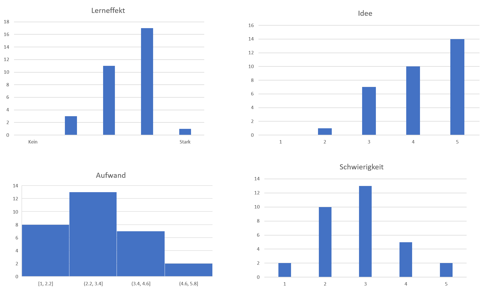
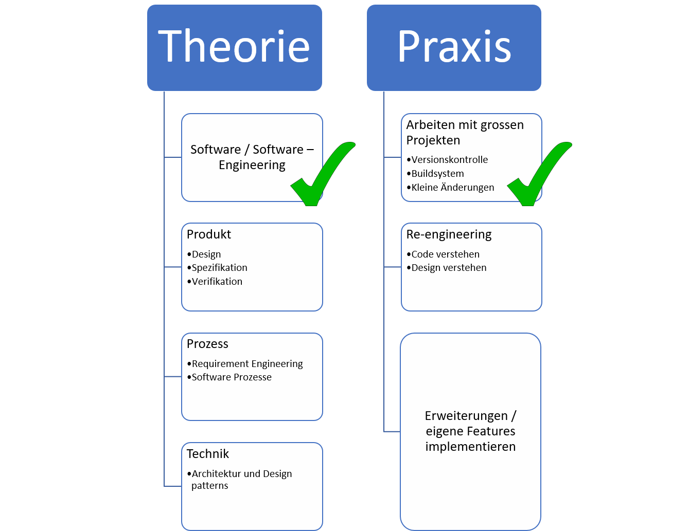

Software engineering
Marcel Lüthi
Departement Mathematik und Informatik

Administratives
- Neue Übung zu Ganttproject online.
- Abgabe: 17. Oktober 2017
- Keine neuen Theorieübungen.
- Übung heute im 05.002 bis 13:45, danach U1.001 und auf Gitter
Auswertung
- Allgemein positiv - Keine grossen Änderungen.
- Unerfüllbare Wünsche
- Musterlösung
- Gitter Chat auf Privat
- Werden auch weiterhin ab und zu ein Paper lesen.
- Aber: Aufwand im Schnitt fast 3 Stunden
Auswertung Paper lesen
Übersicht

Zusammenfassung
- Softwareentwicklung ist schwierig
- Wenig verlässliche Strukturen
- Wir müssen diese selbst definieren
Verlässliche Regeln und gute Strukturen helfen uns Komplexität zu bekämpfen.
Ausblick
- Design: Wie strukturieren wir das Problem (Woche 3-4)
- Spezifikation: Abmachung zwischen Benutzer und Entwickler (Woche 5-6)
- Was soll die Software tun
- Verifikation: Macht die Software wirklich das richtige (Woche 7-8)
Heutiges Programm
- Prinzipen des Software Engineerings
- Besprechung: Software aging
- Einführung: Software design
- Modulstruktur / Softwarearchitektur